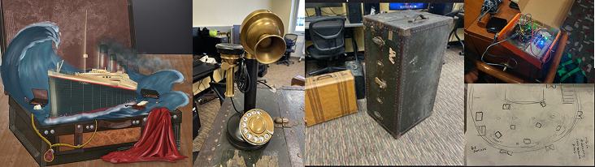
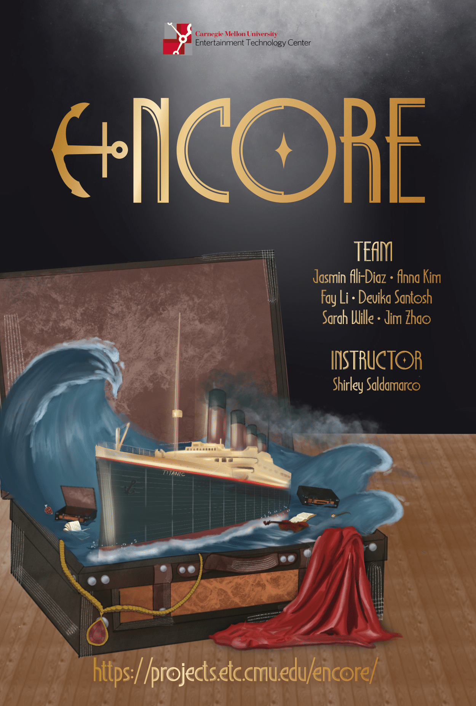

Create an interactive exhibit in the Purnell Center lobby to immerse guests into the world of Titanic using lighting, audio, and interactive set pieces and and prepare them for the musical.
Titanic the Musical Lobby Experience
A pre-show experience for CMU's School of Drama
Currently working as an experience designer and narrative designer for a pre-show experience for CMU’s School of Drama production of Titanic the Musical, as part of a client project with CMU’s Entertainment Technology Center.
ROLE Experience Designer, Narrative Designer
TIMELINE
1 semester

Overview
Concept
Exploring the lives and stories of the characters through their luggage.
We also plan to make our experience change with time, during the run of the show.

Emotional arc, and experience changing with phases of the show
Challenges
- encouraging guests to touch and interact with the exhibit,
- creating user journeys that feel complete even if the guest misses one or two phases of the experience, and
- maintaining a strong narrative with lighting design for the one matinee show we have.
Audience Personas
Mostly older audience (50+) and students - observed during playtests of other shows in the same lobby.
According to client and frequent audience faculty members, we are to expect a greater ratio of older audience for this show.
According to client and frequent audience faculty members, we are to expect a greater ratio of older audience for this show.
User Journey - Interactions
As the user walks past a luggage station, a motion sensor detects their presence and the trunk opens, with a
programmed light tracing the outlines of the props inside, encouraging them to interact with it. We would
use
directional speakers to play an audio recording of the character narrating, also triggered by the motion
sensor.
The guests can explore the props inside - rift through the characters' clothing, read their diaries and letters, examine their possessions, and thereby understand and empathise with their stories.
The guests can explore the props inside - rift through the characters' clothing, read their diaries and letters, examine their possessions, and thereby understand and empathise with their stories.

Design Evolution & Insights
Design principles helped us in various stages of our process:
Character Selection
Our client and us had different ideas on whether we should be using characters from the musical or shine the spotlight on ones that weren't featured. Building a user journey map made us understand how using new characters would distract the guests from both, our experience, as well as our clients, as they would expect to see these characters in the musical, and also exit during the intermission and search for an interesting character they had seen on stage.
Adding Immersive Exhibits
We wanted means to collect feedback and guage how immersed guests are without having to fill feedback forms. We thought of a hanging net of messages in bottles exhibit, where we got feedback that it was not period-accurate. We moved on to a postcard exhibit, as the ship was also a mailing ship, but faculty feedback told us that people would not really write a postcard. We then took inspiration from the ship's Marconi room and made our own version of their telegram system, and took the liberty to make it voice-enabled.
Playtesting for Guest Needs
Playtesting this idea, we realized that guests would feel freer to talk if they knew what they said was anonymous, so we tried iterating different modifications - messages appearing randomly, new ones showing up later, multiple existing messages, until we finally came up with wave-like visuals of messages flowing together, forming an ocean. These were only possible through user research, playtesting, and frequent modifications and feedback sessions.
Role
crafting user journeys and personas for our young and old audience, and making sure the experience feels complete even if they miss any or more of the three parts.
conducting extensive research into the characters' lives, who they were to others, and how they each spoke or wrote, and mimicing these to create stories for their journals, diaries, and pocketbooks.
creating a strong and engaging narrative for the whole experience, to ensure guests connect with these characters.
prop design and fabrication!
For the Entertainment Technology Center, I am designing our team's logo, poster, and half sheet, too.
Character Study
Designing the Narrative
I spent a lot of time researching characters, collecting their life story as a real person and analysing their character in the musical, before selecting props to tell their story.
I spent a lot of time researching characters, collecting their life story as a real person and analysing their character in the musical, before selecting props to tell their story.

Character study for the musician - Wallace Hartley

Audio script for Wallace packing his suitcase before boarding the ship, and planning props

Planning props for the luggage exhibit

The final installation for Musician Wallace Hartley
Graphic Design - Prop Fabrication
I designed paper props for print on Figma to fit the Art Nouveau time period and replicated many old tickets, luggage tags, bottle labels, while also making tabloids, music programs, and magazines from scratch.

Fabrication on Figma


Closeup Props
3D Printing and Audio Interactions
I also designed and 3D printed old telephone receivers for us to attach our speakers to, as playtesting
showed that people felt our original, anachronistic phone handsets looked out of place and weren't loud
enough.


3D printing our speakers and holders
🤔 Problem
Guests may not place the telephone receivers in the correct orientation with the magnetic sensors, breaking the circuit unintentionally.
🧠Design Thinking
How do we make orientation irrelevant? The ideal solution is one that works regardless of how users interact with the object.
💡 Solution
Added copper strips all along the receiver and its holder so that the circuit closes no matter which way it's placed.


Testing with (1)magnetic sensors and (2)copper strips as a conductor, to detect when the earpieces are picked up vs. put down
Using the copper strips helped us solve the issue of ensuring people always put down the earpiece in the correct orientation for it to count as "closed" and for the audio to stop. Now, the earpiece can be spun anyway you want, and only reads as "open" when it is lifted up off the holder.

Earpieces on the final luggage installation!
Lobby Setup
First, second, and third class stations, the Captain, the Musician, and the Marconi Room!


Lobby during pre-show


Reactions! (Photographer: Jose Mireles)
Trial
Combining our hardware and narrative and testing them for third class passenger, Kate McGowan, with
placeholder props!
=
Final Lobby Experience
April 2025, the lobby is set up for the musical, and we learn surprising things from guests and how they interact with the installation!
The following videos were directed and filmed by Sarah Wille, our producer.
The following videos were directed and filmed by Sarah Wille, our producer.
Time Lapse of the Final Installation
Alice and Edgar Beane - demonstrated by Jasmin
Wallace Hartley - demonstrated by Devika
Marconi Room Telegram Station - Demonstrated by Anna
Project Design Production
My role also involved designing the project's logo, poster, and the half sheets that would tell visiting
guests at the ETC what our team does and what our project is about.
Presenting... Team Encore!
Presenting... Team Encore!


More
For weekly dev logs written by our producer, Fay Li, visit our website at https://projects.etc.cmu.edu/encore/

For more, visit our website!